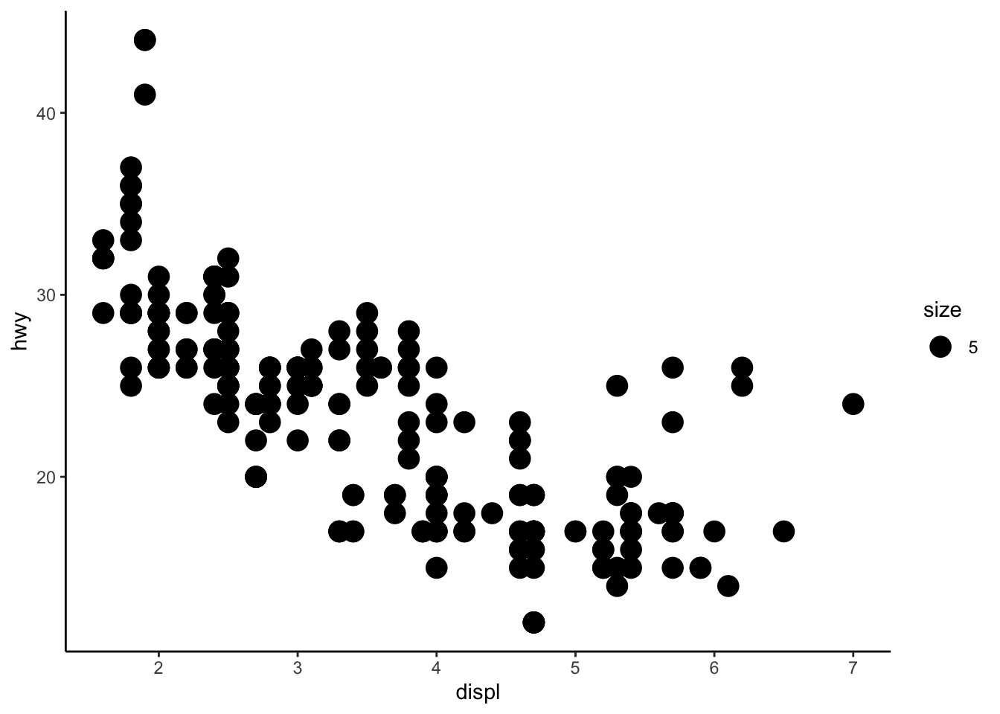

Functions and packages for Lesson 1
Agenda
We’ll be using Ch 3 Data visualisation in R for Data Science.
Section 3.3.1.
- Loading the tidyverse
- Preview a built-in dataset
- Using ggplot with the built-in data set (to make scatterplots)
- Modifying plot aesthetics
- Reading in outside data
- Plotting outside data with ggplot
Loading the tidyverse
We’ll load the tidyverse– you can think of this as a big conglomeration of packages that give us useful functionality (kind of like downloading apps on our phone, for example).
install.packages("tidyverse") # install package
library(tidyverse) # load the package library
require(tidyverse) # same as library
# We are typing in an R Script. Things with # in front make them comments and notes to ourselves
# Command Return to execute the line/ 'run the code'
Using built in R data: the mpg dataset
[Section 3.2.1]((https://r4ds.had.co.nz/data-visualisation.html)
We’ll use a built-in tidyverse dataset called mpg with data about cars and gas-mileage.
mpg
`?`(mpg # run help page
)- This is a tibble (data frame) that we’ve “printed” out. It’s like R’s version of an excel spreadsheet, but much better.
- A tibble will show us the first 10 rows, rows containing the data, column names, and the class of data within each column, such as numeric, integer, or character.
Summarising data
class(mpg) # class of data frame
class(mpg$manufacturer) # class of data column
str(mpg) # structure of data
glimpse(mpg) # preview of data
summary(mpg) # basic summary stats
table(mpg$manufacturer) # counts of each column
head(mpg) # visualise first 6 rows of data
tail(mpg, 10) # visualise last 10 (or N) rows of data
names(mpg) # get column names
mpg$displ # print a column
mpg$hwy # print a column
Creating a plot with ggplot
[Section 3.2.2]((https://r4ds.had.co.nz/data-visualisation.html)
ggplot(). Creates a coordinate system for us–basically an empty graph.
geom_point(). Adds a “layer”, e.g. geom_point (but there are many for different kinds of graphs).
Plot two of the data columns
ggplot(data = mpg) + geom_point(mapping = aes(x = displ, y = hwy))
Changing the data column inputs for the x and y axis of the plot
ggplot(data = mpg) + geom_point(mapping = aes(x = class, y = drv))
Assign data to variables to create dynamic inputs
my_data <- mpg # create own variable using a name of your choice
x <- mpg$displ
y <- mpg$hwy
ggplot(data = my_data) + geom_point(mapping = aes(x = x, y = y))
Themes
Change plot style. Link for more ggplot themes.
require(ggthemes)
# install.packages('tvthemes') require(tvthemes)
# classic theme
ggplot(data = my_data) + geom_point(mapping = aes(x = x, y = y)) + theme_classic()
# minimal theme
ggplot(data = my_data) + geom_point(mapping = aes(x = x, y = y)) + theme_minimal()
# assign theme to variable
my_theme <- theme_tufte() # assign theme to your own variable
ggplot(data = my_data) + geom_point(mapping = aes(x = x, y = y)) + my_theme # add variable defining your chosen theme 
Aesthetic mapping
[Section 3.3]((https://r4ds.had.co.nz/data-visualisation.html)
color. Change the color of the data points. size. Change the size of the data points.
alpha. Change the transparency of the data points.
Color
Color by color name.
ggplot(data = my_data) + geom_point(mapping = aes(x = x, y = y), color = "light blue") + my_theme
Color by a hex code in quotes.
ggplot(data = my_data) + geom_point(mapping = aes(x = x, y = y), color = "#000000") + my_theme
Color by data column
ggplot(data = my_data) + geom_point(mapping = aes(x = x, y = y, color = class)) + my_theme
Size
Size by integer
ggplot(data = my_data) + geom_point(mapping = aes(x = x, y = y, size = 5)) + my_theme
Size by data column
ggplot(data = my_data) + geom_point(mapping = aes(x = x, y = y, size = class)) + my_theme We get a warning, but this is okay.
We get a warning, but this is okay.
Transparency
ggplot(data = my_data) +
geom_point(mapping = aes(x = x, y = y, alpha = class)) + # maps classes to different transparencies
my_theme
Shape
ggplot(data = my_data) + geom_point(mapping = aes(x = x, y = y, shape = class)) + my_theme
Any warnings? Yes – because shape maxes out at six levels.
## Manually changing aesthetic properties
But we can set the aesthetic properties manually, instead of having ggplot do the scaling automatically. For example, we can make our ggplot points all blue like this. This time, putting color OUTSIDE the aes argument.
ggplot(data = my_data) + geom_point(mapping = aes(x = displ, y = hwy), color = "blue") + my_theme
Using color both inside and outside the aes
ggplot(data = my_data) + geom_point(mapping = aes(x = displ, y = hwy, color = class), color = "#000000") +
my_theme
The inner one is overridden.
Aesthetics you can manually set
- The name of a color as a character string.
- The size of a point in mm.
- The shape of a point as a number, as shown in Figure 3.1.

R has 25 built in shapes that are identified by numbers. There are some seeming duplicates: for example, 0, 15, and 22 are all squares. The difference comes from the interaction of the colour and fill aesthetics. The hollow shapes (0–14) have a border determined by colour; the solid shapes (15–18) are filled with colour; the filled shapes (21–24) have a border of colour and are filled with fill.
AirBnB data
library(tidyverse) # includes package 'readr'
# All Airbnb data (106 cols)
url <- "http://data.insideairbnb.com/united-states/ny/new-york-city/2019-06-02/data/listings.csv.gz"
df_full <- read_csv(url) # reads in data
df <- df_full[df_full$id < 1e+06, ] # subsets ~2k of the ~48k entries based on (arbitrary?) id
df # prints as a tibble
Taking a quick look at the larger data set
- Use glimpse(df) to see a list of all the columns
- Real data has messy entries, e.g. “Williamsburg, Brooklyn” and “Williamsburg bk”
Let’s stick with a smaller data set
# smaller csv file (16 cols)
url <- "http://data.insideairbnb.com/united-states/ny/new-york-city/2019-06-02/visualisations/listings.csv"
df_full <- read_csv(url)
df <- df_full[df_full$id < 1e+06, ]
df
glimpse(df)